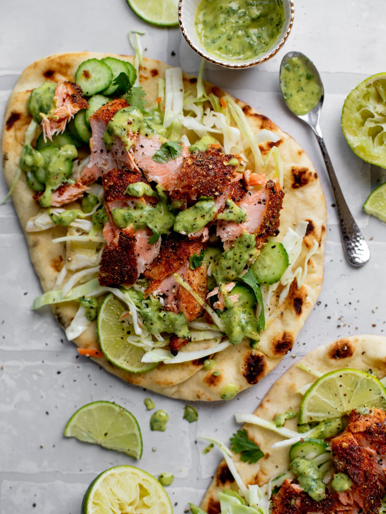

Blackened Salmon and Naan with Lime Slaw

Description
Baked Salmon with a smoky seasoning blend on a lightly toasted naan, topped with a homemade lime cucumber slaw and avocado lime cilantro sauce.
Ingredients
- 1 lb salmon
- 1 tsp paprika
- 1/2 tsp dried oregano
- 1/2 tsp kosher salt
- 1/2 tsp freshly cracked black pepper
- 1/2 tsp garlic powder
- 1 pinch of red pepper flakes
- 4 Specially Selected Naan Bread
- slaw
- 4 cups coleslaw
- 3 mini seedless cucumbers, sliced
- 1/3 cup chopped cilantro
- 2 tbsp freshly squeezed lime juice
- 2 tbsp extra virgin olive oil
- avocado lime cilantro sauce
- 1/4 avocado
- 1/2 cup fresh cilantro
- 2 tbsp freshly squeezed lime juice
- 2 tbsp extra virgin olive oil
- 1 garlic clove, minced
- salt and pepper, to taste
Steps
- Preheat oven to 400 degrees.
- Pat the salmon dry with a towel. Place on foil lined pan. Stir together the paprika, oregano, salt, pepper, garlic powder and red pepper flakes. Sprinkle all over the salmon.
- Place the salmon on the oven. Cook for 15-18 minutes, until internal temperature reaches about 140 degrees. Remove the salmon and let it sit for 5 minutes.
- While the salmon rests, place the naan bread on pan under medium heat for just 1-2 minutes per side, until warm and slightly charred.
- To build the meal, spoon the slaw over the naan bread. Top with some flaked salmon. Drizzle on the cilantro sauce.
Slaw
- Combine the cabbage, cucumbers and cilantro in a bowl with a pinch of salt and pepper. Toss with the lime juice and olive oil until combined. Set aside until ready to use.
Cilantro Sauce
- Combine all ingredients in a food processor or blender and blend until combined. Drizzle over salmon.